1.1 Orden de Compra (OC): Registro de Pedido Local
Formulario de emisión de pedidos formales a proveedores nacionales. Establece las condiciones comerciales de compra (precios unitarios, impuestos, términos de pago y depósito de entrega) previo a la recepción de existencias en almacén.
El campo 'Nro de OC' se completa automáticamente con el correlativo oficial al hacer clic en 'Grabar'. Los botones '- IGV' y '+ IGV' permiten calcular o discriminar el crédito fiscal sobre los costos ingresados, mientras que el menú 'Eventos' prepara la posterior '1.-Guia de Entrada' en almacén.
Acceso a Orden de Compra
Ruta de navegación desde el menú de documentos transaccionales para abrir la pantalla:
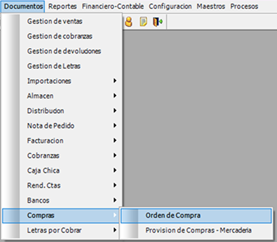
Compras > Orden de Compra" style="width: 100%; height: auto; display: block; border-radius: 6px;">Visualizador de la pantalla de Orden de Compra
Lienzo transaccional completo con cabecera de parámetros, grilla de artículos y botonera de control:
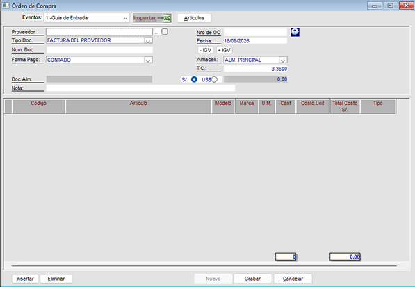
1. Diccionario Técnico de Campos de Cabecera
Especificación y validación de las variables maestras de la orden de compra:
| CAMPO / CONTROL | TIPO DE ENTRADA | OBLIGATORIO | DESCRIPCIÓN OPERATIVA Y REGLA DE NEGOCIO |
|---|---|---|---|
| Proveedor › | Búsqueda [...] / RUC | Sí | Razón social o RUC del proveedor nacional. El selector [...] permite buscar en el padrón de terceros. |
| Nro de OC › | Correlativo con Ayuda [?] | Sistema | Código único generado tras grabar. El botón [?] permite consultar e importar órdenes previas registradas. |
| Tipo Doc. / Num. Doc › | Menú / Alfanumérico | Sí | Tipo de comprobante esperado ('FACTURA DEL PROVEEDOR') y número correlativo de referencia. |
| Fecha: / Forma Pago: › | Fecha / Selector | Sí | Fecha de registro comercial (DD/MM/AAAA) y condición de pago acordada (CONTADO o Crédito). |
| Almacen: / Doc.Alm. › | Menú Desplegable / Texto | Sí | Depósito físico destinado para la recepción de la carga (ej. ALM. PRINCIPAL). |
| Impuestos (- IGV / + IGV) | Botones de Cálculo | Operativo | Alterna entre aplicar el 18% del IGV al subtotal o deducirlo para obtener el costo neto unitario. |
| Moneda / T.C. / Total › | Radios / Decimal / Sistema | Sí | Moneda operativa (S/. o US$), tipo de cambio oficial del día y sumatoria del costo total pactado. |
| Nota: › | Texto Libre | No | Observaciones técnicas, condiciones de entrega o referencias de la cotización del proveedor. |
2. Barra de Acciones Superiores e Integración
Controles de enlace operativo y herramientas de carga para los ítems:
| CONTROL / BOTÓN | UBICACIÓN | TIPO DE ACCIÓN | PROPÓSITO OPERATIVO |
|---|---|---|---|
| Eventos: › | Barra superior | Integración Logística | Selecciona 1.-Guia de Entrada para transformar la orden aprobada en una recepción directa en almacén. |
| Importar -> Excel › | Barra superior | Carga Masiva | Permite cargar en lote códigos de artículo y cantidades cotizadas desde una plantilla de Excel. |
| Articulos › | Barra superior | Catálogo Maestro | Abre el buscador maestro para incorporar artículos individuales a la grilla de detalle. |
3. Especificación de Grilla y Botonera Inferior
Reglas operativas para la gestión de las filas de artículos y comandos transaccionales:
| ELEMENTO / BOTÓN | UBICACIÓN | TIPO DE ACCIÓN | REGLA OPERATIVA Y DE NEGOCIO |
|---|---|---|---|
| Columnas de Grilla › | Grilla de Detalle | Comercial | Detalla Codigo, Articulo, Modelo, Marca, U.M., Cant, Costo.Unit, Total Costo S/. y Tipo. |
| Insertar / Eliminar › | Grilla inferior izq. | Edición | Añade una línea manual en blanco o remueve el ítem seleccionado de la orden. |
| Nuevo › | Barra inferior | Limpieza | Habilita los campos del formulario para la confección de una nueva Orden de Compra. |
| Grabar › | Barra inferior | Transaccional | Valida los ítems, asigna el Nro de OC correlativo oficial y asienta el compromiso comercial. |
| Cancelar › | Barra inferior | Control | Cierra el formulario descartando los cambios que no hayan sido guardados. |
Desplegable Eventos: Selector operativo para enlazar directamente el pedido con la logística de almacén ('1.-Guia de Entrada') al ser aprobado.
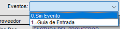
Botón Importar -> Excel y Artículos: Herramientas de carga externa para volcar listas masivas de códigos desde hojas de cálculo o abrir el catálogo maestro de artículos.
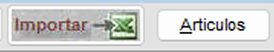
Identificación del Proveedor y Correlativo Oficial
Campo Proveedor con Selector [...] y Casilla: Espacio para digitar RUC o razón social. Incluye el botón selector con puntos suspensivos [...] para buscar en el maestro de personas y una casilla contigua de validación.
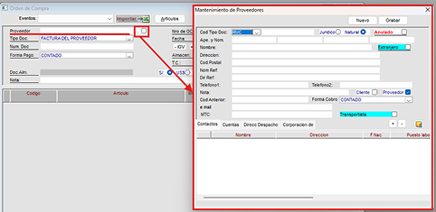
En este campo se puede agregar un proveedor existente o un nuevo proveedor, se explica mejor en punto Menú Maestros_Personas_0.3.6.3.4.
Nro de OC con Botón de Ayuda (?): Muestra el número correlativo oficial asignado automáticamente al grabar. El botón contiguo con signo de interrogación (?) permite consultar e importar órdenes previas.
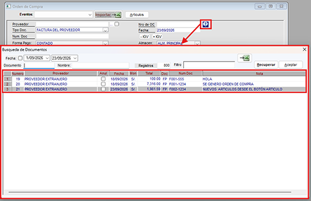
Para seleccionar la OC de preferencia solo dar doble clic y el campo de proveedor se completará automaticamente.
Documento de Referencia y Condiciones de Pago
Tipo Doc. y Num. Doc: Menú desplegable para seleccionar el comprobante esperado (por defecto 'FACTURA DEL PROVEEDOR') y casilla para ingresar la serie y correlativo referencial.
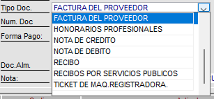
Desplegable Forma Pago: Selector para definir las condiciones financieras de adquisición acordadas con el proveedor (CONTADO o Crédito).
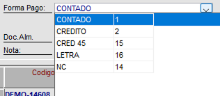
Logística de Destino y Parámetros Económicos
Desplegable Almacen: Selecciona la sede o depósito físico que recepcionará las mercaderías (ej. 'ALM. PRINCIPAL').
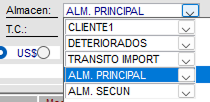
Conmutadores de Impuestos (- IGV / + IGV): Botones de cálculo rápido para adicionar o deducir el 18% del crédito fiscal sobre los costos pactados.
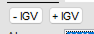
Variables Auxiliares y Moneda
- Fecha: Fecha oficial de emisión del requerimiento (ej. 23/09/2026).
- Moneda: Radio buttons excluyentes para fijar Soles (S/.) o Dólares (US$).
- T.C. y Total: Cotización cambiaria del día (3.3560) e importe consolidado pactado.
- Doc.Alm. y Nota(obligatorio): Identificador de movimiento de almacén y glosa libre para instrucciones de entrega.
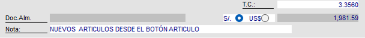
Flujo para entrar a la ventana Orden de Compra y Botón Importar
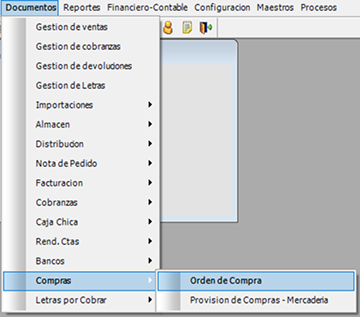
Botón Importar
Aparecerá la ventana Orden de Compra, esta OC es similar a la OC Importaciones que se vera en el punto 4.2. Orden de Compra - Imp. Se debe completar los campos y luego importar los articulos desde excel.
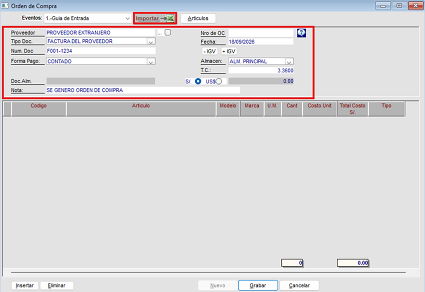
Si las columnas en excel no estan completas nos aparecera la siguiente ventana:
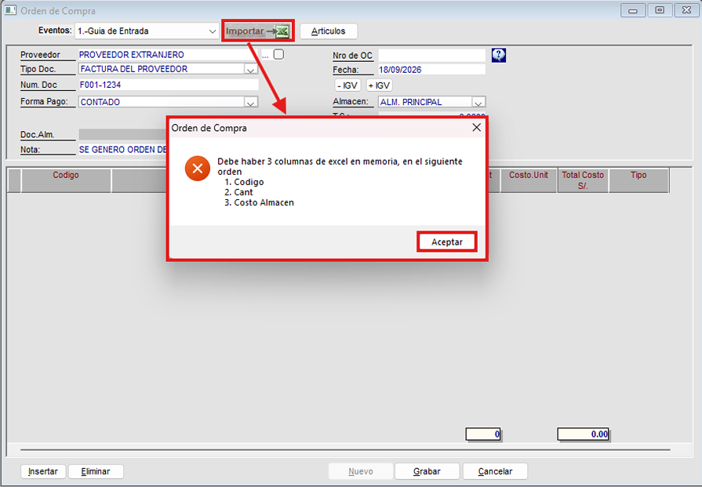
Estos datos podemos sacarlo de la ventana Precios.
Flujo para llegar a la ventana Precios:
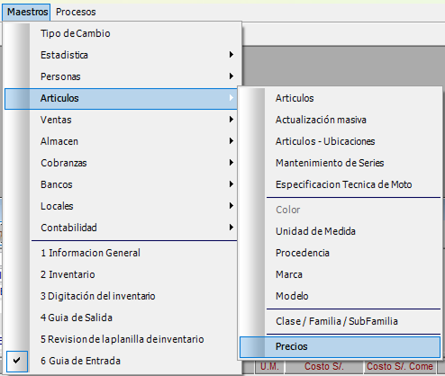
Aparecerá esta ventana con todos los articulos y tambien el costo de cada artículo que se necesita (esto varia deacuerdo al proveedor) la cantidad se digita manualmente en el excel, viene a ser la cantidad de articulos que se desean.
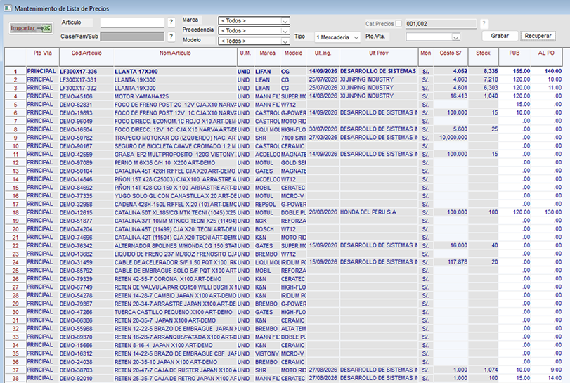
Esta pantalla se exporta a excel con el botón que esta en la barra de herramientas y de ahi se guarda como archivo xlms.
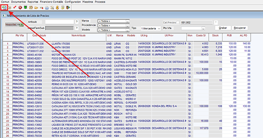
En el excel nos debe quedar de esta manera:
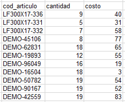
Copiamos esa tabla del excel y lo importamos al sistema, ahora los articulos apareceran en la grilla.
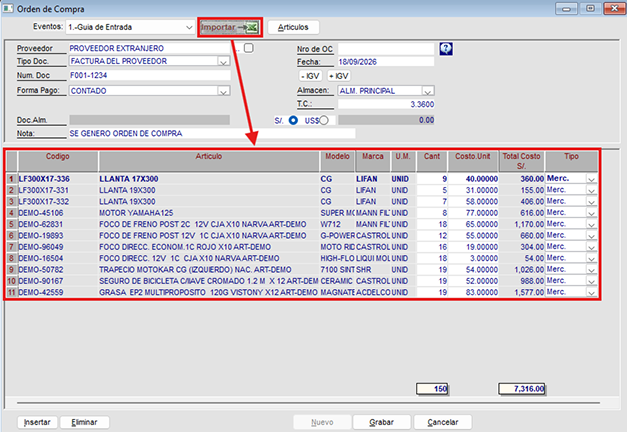
Ahora debemos grabarlo para que se guarde en el sistema. Los campos cambiarán de estado.
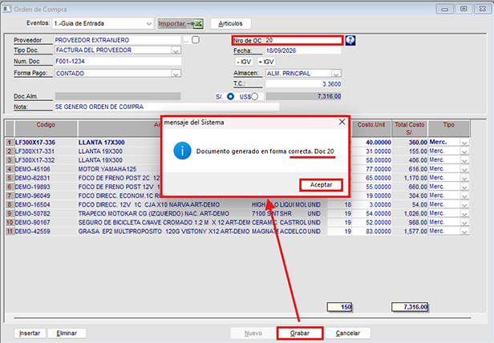
Los campos cambiaron de estado.
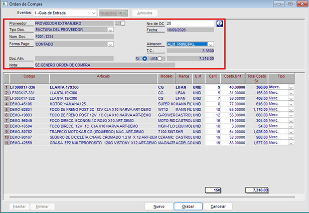
Botón Artículos
Con el botón Artículos podremos abrir una ventana donde esten todos los artículos que estan en el sistema:
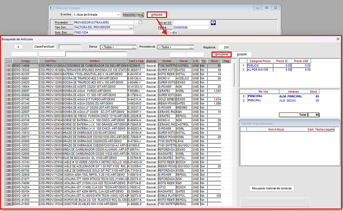
1. Filtros Superiores y Criterios de Selección
Parámetros de filtrado para localizar artículos en el catálogo maestro:
| PARÁMETRO / CONTROL | TIPO DE ENTRADA | MODO | PROPÓSITO OPERATIVO Y REGLA DE NEGOCIO |
|---|---|---|---|
| Botón [+] › | Comando Rápido | Catálogo | Permite visualizar solo a los artículos que tienen stock disponible y al dar clic otra vez aparecen de nuevo todos los articulos existentes. |
| Clase/Fam/Subf › | Búsqueda Jerárquica | Filtro | Acota el catálogo según la clasificación por Clase, Familia y Subfamilia. |
| Marca / Procedencia › | Menús Desplegables | Consulta | Segmenta por fabricante de origen o procedencia geográfica (< Todos >). |
| Registros › | Numérico Entero | Control | Límite máximo de coincidencias visibles en la cuadrícula (por defecto 200). |
| Filtros de Texto (Columnas) › | Cajas de Texto Libre | En vivo | Cajas de búsqueda predictiva inmediata sobre Codigo, Cod Prov y Nombre. |
| Recuperar / Aceptar › | Botones de Comando | Acción | Recuperar consulta las existencias según filtros; Aceptar traslada el ítem al formulario padre. |
Botón [+] y Filtro Clase/Fam/Subf: El botón [+] al dar clic por primera vez permite visualizar a todos los articulos que tienen stock disponible y cuando se vuelve a dar click regresa a su estado original; el campo jerárquico delimita por Clase, Familia y Subfamilia.
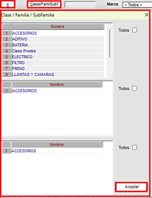
Desplegables Marca, Procedencia y Campo Registros: Segmenta por fabricante, origen geográfico ('< Todos >') y acota el total de resultados (fijado en 200).
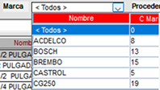
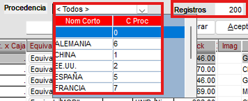
Cajas de Filtro Predictivo (Cabecera de Grilla): Cajas de texto en vivo para búsqueda inmediata por Código, Código Proveedor o Nombre del producto.
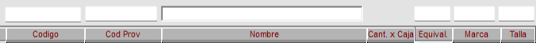
2. Grillas de Consulta: Catálogo, Precios, Stock y Tránsito
Estructura multipanel de detalle técnico, comercial y logístico:
| COMPONENTE / PANEL | COLUMNAS PRINCIPALES | MODO | PROPÓSITO Y CONTROL TÉCNICO |
|---|---|---|---|
| Grilla Principal de Artículos › | Codigo, Cod Prov, Nombre, Cant x Caja, Modelo, Marca, Stock, Imag | Consulta | Relación de artículos encontrados con detalles de catálogo, empaque y saldo global. |
| Panel Superior Der: Precios › | Categoria Precio, Precio S/., Precio US$ | Tarifario | Muestra las tarifas vigentes del artículo seleccionado por categoría (PUBLICO, AL POR MAYOR). |
| Panel Medio Der: Stock por Sede › | Pto Vta, Almacen, Stock (Total al pie) | Kardex | Desglose de existencias físicas disponibles discriminadas por sede y almacén. |
| Panel Inferior Der: Tránsito › | NomArticulo, Cant, Fecha Llegada | Logístico | Muestra compras de importación en curso pendientes de arribo para el ítem seleccionado. |
| Recuperar historial de compras › | Botón de Comando | Histórico | Despliega los últimos precios y órdenes de compra con proveedores para este artículo. |
Columna Equival: Permite registrar un texto libre.
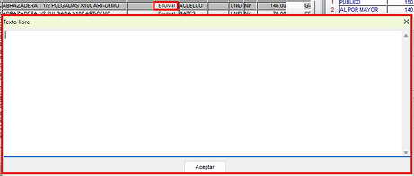
Se añaden artículos dandole doble clic a los articulos que se desean registrar y se completan los campos (cantidad y costo en caso no esten completos) y luego cierras la pantalla y aparecerán los artículos..
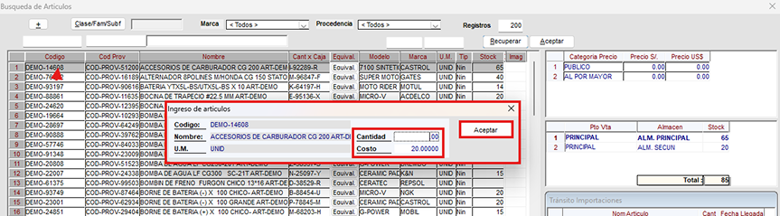
Se da clic en Aceptar y aparecerán en la grilla los articulos que se hayan seleccionado, en este caso se añadió 4 artículos y luego dar clic al botón Grabar.
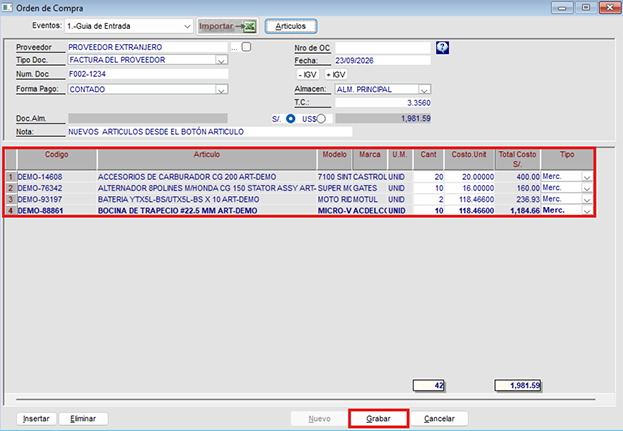
Y ya se grabó la OC en el sistema y los campos ya no se podrá editar.
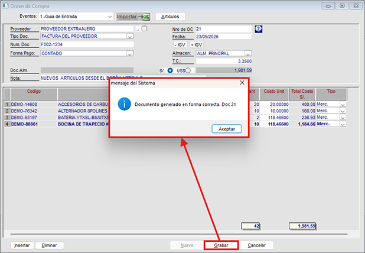
Aparecera así:
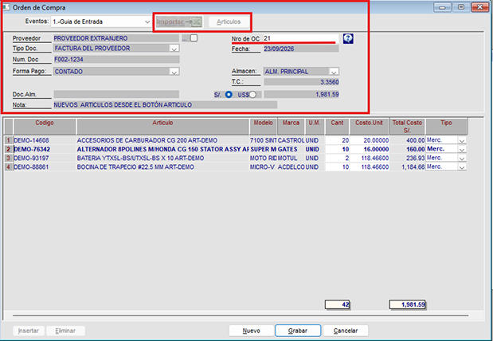